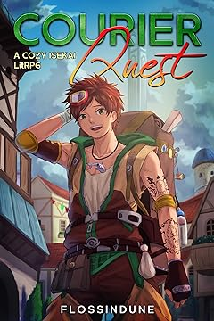

Courier Quest: A Cozy Isekai LitRPG

You have been summoned here for one reason. Trevor, you need a break.
Trevor Anderson is just another normal, overworked retail worker. All he wants is his promised promotion, a chance to use some of his vacation days without feeling guilty about it, and time for his hobbies.
While waiting patiently for his life to improve, a workplace accident changes everything for Trevor, including the world he resides in. After he bungles his way through a summoner's questionnaire and gains the Power of an extradimensional inventory, he lands in the peaceful town of Tosa. For more information, visit Amazon.com
100th Run Series
He's got 99 problems, and an extra time loop ain't one...
The world is devolving into chaos as a game-like system has reduced the population to a series of statistics and screens.
Confusion reigns as everyone struggles to survive in this new reality. Everyone but one man. Anthony Franklin has a secret. One that gives him an edge. He has lived through this exact series of events... 99 times in a row.
Anthony needs to take advantage of all he accomplished over his past runs—every play, shortcut, and strategy—to save as many lives as possible by the end. He must contend with vicious boss monsters, elude the oppressive surveillance eyes of the system administrators, and watch his back when dealing with the scheming players that want the game to go their way no matter the cost.
For more information, visit Amazon.com